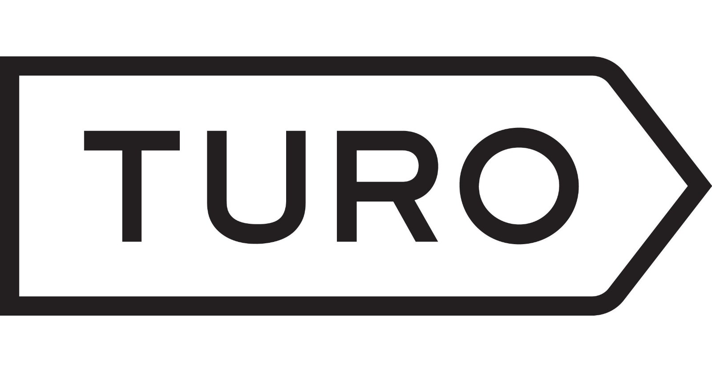
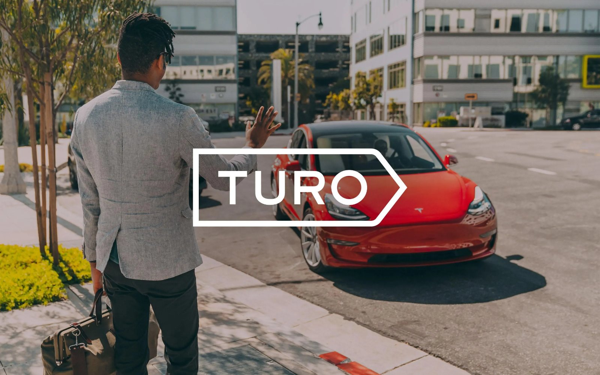
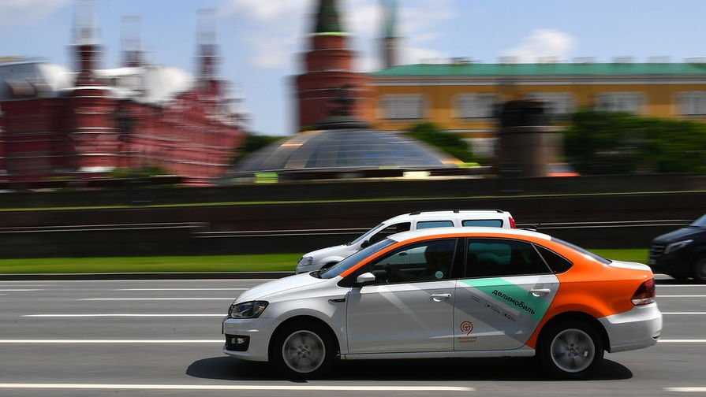
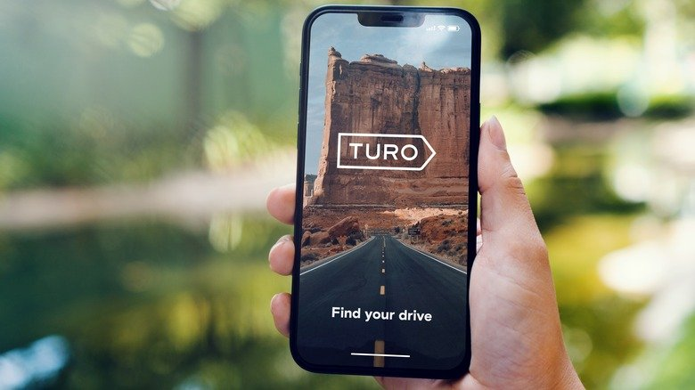

Почему «Airbnb для автомобилей» стал почти миллиардным бизнесом — и можно ли повторить это в России?
Turo доказал, что для создания крупнейшего сервиса аренды автомобилей необязательно покупать ни одной машины. Главный актив компании — не автопарк, а технология, доверие и маркетплейс.

Представьте, что вместо аренды автомобиля у классического проката вы арендуете машину у обычного человека.
Именно так работает Turo.
Компания соединяет владельцев автомобилей и людей, которым нужна машина на несколько часов или дней. Владельцы зарабатывают на простаивающих автомобилях, а арендаторы получают больший выбор и зачастую более низкую цену, чем у традиционных прокатчиков.
Сегодня Turo работает в пяти странах, объединяет миллионы пользователей и сотни тысяч автомобилей. По итогам 2024 года компания получила около 958 млн долларов выручки, а объём бронирований через платформу достиг 2,5 млрд долларов. Компания также сообщает, что уже несколько лет работает с положительной EBITDA — то есть основной бизнес приносит прибыль до учёта процентов по долгам, налогов и амортизации.
Но главный вопрос для российского предпринимателя другой.
Основной продукт — P2P-платформа (Peer-to-Peer — «от человека к человеку») для аренды автомобилей.
География:
- ◇США
- ◇Канада
- ◇Великобритания
- ◇Франция
- ◇Австралия
История финансирования показывает, что инвесторы долго верили в рынок совместного использования автомобилей.
Основные этапы:
- ◇Более 500 млн долларов привлечённых инвестиций.
- ◇Среди инвесторов — Google Ventures, Kleiner Perkins, IAC и Mercedes-Benz.
Последняя публично известная оценка: ≈ 1,24 млрд долларов.
В 2022 году компания подала документы на IPO (выход на биржу).
Однако в феврале 2025 года отказалась от размещения из-за рыночной ситуации. Это не означало крах бизнеса — компания продолжила работу, но сократила часть сотрудников и решила сосредоточиться на развитии без публичного рынка.
По разным оценкам, личный автомобиль используется лишь небольшую часть суток, а всё остальное время остаётся без дела.
При этом:
- ◇владельцы продолжают платить за страховку;
- ◇обслуживание;
- ◇парковку;
- ◇налоги;
- ◇кредит.
Один человек несёт постоянные расходы.
Другой в это же время ищет машину в аренду.
Традиционные прокатные компании решили эту проблему частично.
Но у них появились свои недостатки:
- ◇ограниченный выбор;
- ◇фиксированные точки выдачи;
- ◇очереди;
- ◇высокий депозит;
- ◇стандартный парк автомобилей.
Рынок давно нуждался в модели, где владельцы могли бы самостоятельно сдавать свои автомобили.
Компания вообще не покупает автомобили. Она строит инфраструктуру.
Turo стала маркетплейсом между двумя сторонами:
За каждую успешную аренду платформа берёт комиссию.
В результате выигрывают обе стороны.
Владелец начинает получать дополнительный доход.
Пользователь получает огромный выбор автомобилей.
А Turo масштабируется практически без покупки активов.
- Регистрируется.
- Добавляет автомобиль.
- Загружает фотографии.
- Указывает стоимость аренды.
- Настраивает доступность.
- Получает бронирования.
- Передаёт автомобиль.
- Получает деньги.
- Заходит в приложение.
- Выбирает город.
- Находит нужный автомобиль.
- Бронирует.
- Оплачивает.
- Забирает машину.
- Возвращает.
- Оставляет отзыв.
Всё максимально похоже на Airbnb. Только вместо квартиры — автомобиль.
Самое интересное в Turo — компания практически не владеет автомобилями.
Она не покупает машины. Не строит автопарк. Не открывает парковки.
Она зарабатывает на чужих автомобилях.
По сути Turo — это маркетплейс.
Точно так же, как Airbnb соединяет владельца квартиры и путешественника.
Turo соединяет владельца автомобиля и арендатора.
За каждую успешную аренду компания получает комиссию.
Кроме комиссии существует ещё несколько источников дохода…
Основные источники выручки
Именно поэтому компания зарабатывает больше, чем просто комиссия.
Компания не раскрывает полную юнит-экономику.
Поэтому некоторые показатели неизвестны.
Что известно. В 2024 году:
Общий объём бронирований — это деньги, которые пользователи заплатили через платформу.
Важно. Это не выручка компании. Из этой суммы часть получают владельцы автомобилей.
Выручка самой компании составила ≈ 958 млн долларов.
Turo работает сразу на нескольких огромных рынках.
Во-первых — рынок аренды автомобилей.
Во-вторых — рынок совместного потребления (Sharing Economy).
Именно второй рынок растёт быстрее.
Люди всё чаще готовы:
- ◇арендовать квартиру вместо покупки;
- ◇брать велосипед напрокат;
- ◇пользоваться каршерингом;
- ◇сдавать собственные вещи.
Автомобиль стал следующим логичным шагом.
По различным отраслевым оценкам мировой рынок аренды автомобилей оценивается в десятки миллиардов долларов и продолжает расти благодаря цифровизации и изменению потребительских привычек.

Многие думают: «Люди просто начали сдавать машины».
На самом деле причин намного больше.
1. Компания решила проблему доверия
Самая большая проблема — незнакомые люди.
Как передать автомобиль человеку, которого видишь первый раз?
Turo построила систему доверия. Есть:
- ✓рейтинги;
- ✓отзывы;
- ✓проверка личности;
- ✓страхование;
- ✓поддержка.
Без этого рынок бы не появился.
2. Компания не покупает автомобили
Это главное преимущество.
Например. Каршеринг хочет выйти в новый город. Что ему нужно? Купить 500 автомобилей.
Turo? Ноль.
Все автомобили уже принадлежат пользователям.
Именно поэтому масштабирование обходится значительно дешевле.
3. Огромный выбор автомобилей
Каршеринг обычно предлагает несколько десятков моделей.
Turo предлагает практически всё. Например:
- ◇Porsche;
- ◇Tesla;
- ◇Ford Mustang;
- ◇семейный минивэн;
- ◇пикап;
- ◇кабриолет.
Пользователь выбирает именно то, что ему нужно.
4. Владельцы сами заинтересованы зарабатывать
Каждый новый владелец автомобиля приводит на платформу собственный актив.
Получается интересный эффект.
Чем больше владельцев — тем больше автомобилей.
Чем больше автомобилей — тем больше клиентов.
Чем больше клиентов — тем выгоднее владельцам.
Получается положительный сетевой эффект.
Зарубежные
- Getaround
- Kyte
- Zipcar
- Enterprise
- Hertz
- Avis
Главные конкуренты в России
И вот здесь начинается самое интересное.
На первый взгляд кажется: «В России аналогов нет».
На самом деле это не совсем так.
Главный конкурент Turo — не другой маркетплейс.
Главный конкурент — каршеринг.
Именно каршеринг уже закрывает большую часть потребности «взять машину на короткий срок».
Основные игроки:
- Делимобиль
- Ситидрайв
- BelkaCar
- Яндекс Драйв (в тех городах, где сервис доступен)

Почему пользователь сегодня выбирает каршеринг
Каршеринг выигрывает за счёт простоты.
Открыл приложение. Нашёл ближайшую машину. Открыл автомобиль. Поехал.
Весь процесс занимает несколько минут.
Для городской поездки это практически идеальный сценарий.
Где Turo выигрывает у каршеринга
Но если поездка длится несколько дней, ситуация меняется.
Например. Нужно:
- ◇поехать в другой город;
- ◇взять внедорожник;
- ◇арендовать премиальный автомобиль;
- ◇взять минивэн для семьи;
- ◇использовать машину неделю.
Каршеринг становится менее удобным или более дорогим.
Именно здесь появляется ниша Turo.
Есть ли аналог в России
Полноценного аналога Turo федерального масштаба сегодня нет.
При этом в России существуют:
- ◇сервисы проката автомобилей;
- ◇каршеринг;
- ◇небольшие региональные P2P-площадки и частные объявления.
Однако ни один игрок пока не занял позицию национального маркетплейса, где владельцы массово сдают свои личные автомобили через единую платформу.
Я бы изменил модель.
Вместо всей России
Начал бы только с Москвы.
После этого:
- Санкт-Петербург.
- Казань.
- Сочи.
- Екатеринбург.
Второе изменение
Не запускал бы все категории автомобилей. Начал только с:
- ◇бизнес-класс;
- ◇внедорожники;
- ◇минивэны;
- ◇коммерческий транспорт.
Именно здесь каршеринг закрывает спрос хуже всего.
Третье изменение
Максимально автоматизировал бы:
- ◇проверку документов;
- ◇страхование;
- ◇оплату;
- ◇передачу автомобиля.
Почему этот бизнес МОЖЕТ получиться в России
Я вижу несколько факторов в пользу такой модели.
- ✓В крупных городах миллионы автомобилей простаивают большую часть времени.
- ✓Пользователи уже привыкли к цифровой аренде благодаря каршерингу.
- ✓На рынке нет доминирующего P2P-сервиса федерального масштаба.
- ✓Для владельцев автомобилей дополнительный доход может стать сильной мотивацией.
- ✓AI и автоматизация способны значительно снизить операционные расходы на проверку пользователей и поддержку.
Вероятность успеха — средняя, но она заметно повышается, если начинать с отдельных сегментов (например, премиальных автомобилей или коммерческого транспорта), а не пытаться сразу конкурировать с массовым каршерингом.
Почему этот бизнес МОЖЕТ НЕ получиться в России
Есть и серьёзные риски.
- ✕Владельцы могут опасаться передавать личный автомобиль незнакомым людям.
- ✕Страхование и урегулирование ущерба могут оказаться сложнее, чем в США.
- ✕Каршеринг уже удовлетворяет значительную часть спроса на краткосрочную аренду в крупных городах.
- ✕Построение доверия к новой платформе потребует больших затрат на маркетинг и сервис.
- ✕Без критической массы автомобилей и арендаторов маркетплейс не сможет эффективно работать — это типичная проблема двухсторонних платформ.
Именно поэтому я считаю, что копировать Turo «один в один» было бы ошибкой. Более перспективной выглядит адаптация модели под те сценарии, где каршеринг закрывает потребность хуже всего: длительная аренда, редкие категории автомобилей и коммерческий транспорт.
Да. Но не так, как многие думают.
Большинство предпринимателей начинают с разработки дорогого мобильного приложения.
Это ошибка.
Главная задача MVP (минимально жизнеспособного продукта) — проверить спрос, а не написать идеальный код. Я бы запускал проект поэтапно.
Нужно найти: 20–30 владельцев автомобилей; 50–100 потенциальных арендаторов.
Цель: понять, готовы ли люди сдавать свои автомобили через платформу.
Сколько нужно денег на старт
Это зависит от масштаба.
Что можно позаимствовать
Не обязательно копировать весь бизнес.
Можно внедрить отдельные идеи уже завтра. Например:
- ✓систему рейтингов;
- ✓безопасную оплату;
- ✓динамическое ценообразование;
- ✓отзывы после сделки;
- ✓автоматическую проверку документов;
- ✓цифровой договор;
- ✓страховые продукты как дополнительный источник дохода.
Именно такие детали делают платформу удобнее и повышают доверие пользователей.
Личная оценка автора.
Главная ошибка — думать, что нужно просто сделать приложение.
На самом деле самое сложное — не разработка.
Самое сложное — одновременно привлечь владельцев автомобилей и арендаторов.
Без автомобилей нет клиентов.
Без клиентов нет владельцев.
Это классическая проблема маркетплейсов.
Вторая ошибка — попытка выйти сразу на всю страну.
Третья — отсутствие надёжной системы проверки пользователей и урегулирования спорных ситуаций.
Основные риски
Главный инсайт
Turo — это не бизнес по аренде автомобилей.
Это бизнес по созданию доверия между незнакомыми людьми.
Именно доверие, а не автомобили, стало главным конкурентным преимуществом компании.
Дополнительные критерии
Что делать завтра
- Провести 20 интервью с владельцами автомобилей.
- Провести 20 интервью с потенциальными арендаторами.
- Запустить лендинг с формой заявки.
- Найти первых владельцев автомобилей и провести сделки вручную.
- Проверить, готовы ли пользователи платить за такой сервис без полноценного приложения.
Если бы у меня было 3 млн ₽
Мой ответ — скорее нет.
При бюджете 3 млн ₽ я бы не пытался строить федеральный аналог. На российском рынке уже есть сильные игроки в сфере мобильности, а главная проблема — не технология, а доверие и достижение критической массы пользователей.
Что бы я сделал вместо этого?
Я бы взял одну идею из Turo и применил её в более узкой нише:
- ◇аренда коммерческого транспорта между компаниями;
- ◇аренда спецтехники;
- ◇аренда автодомов;
- ◇аренда премиальных автомобилей;
- ◇аренда строительного оборудования по модели маркетплейса.
Эти сегменты менее насыщены, требуют меньших маркетинговых бюджетов и позволяют быстрее проверить спрос.

Итоговая оценка
Материал носит аналитический характер и не является инвестиционной рекомендацией.